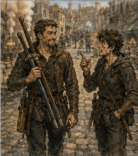
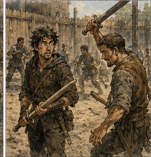
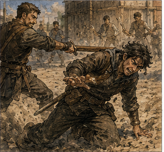

Jorren answered the question the next morning.
Not immediately. He made me earn it by walking to the guild yard with him in silence while he carried two practice swords over one shoulder and behaved as though I had personally invented irritating young men.
I let him have almost half a street.
"Well?"
"No."
"You said fuck. That implied analysis."
"It implied regret."
"Useful regret?"
Jorren kept walking.
Third bell had not sounded yet. Carrow was already awake in the practical way cities became awake before respectable people admitted morning had begun. Bakers had fires. Porters had curses. A wagon wheel somewhere ahead had developed a scream exactly like a dying animal and was being ignored by everyone involved.
I waited another ten steps.
"What does he do badly?"
Jorren stopped so abruptly I nearly walked into him.
"He thinks winning the first part means he owns the second."
I smiled.
Jorren pointed one practice sword at my chest.

"That face. Stop."
"What face?"
"The one where a person turns into furniture."
"I don't do that."
"You absolutely do that."
"People are much less predictable than furniture."
"Greg."
"Fine. Explain."
He lowered the sword.
"Yesterday. Knife man. He got the wrist, broke the line, had the man done. Then he chased the next movement too hard. Same with the one behind the wagon. Once he thinks he's ahead, he starts spending the lead before he knows what it bought him."
That was better than the answer I had built overnight.
Mine had involved ambition, command instinct, probable relationship to authority, the song, and a theory about why certain men become dangerous when the world starts rewarding confidence.
Jorren had watched his feet.
I hated when other people were useful before I finished being clever.
"So he overcommits."
"Sometimes."
"When he's winning."
"Yes."
"Not when he's losing."
Jorren looked at me.
There.
"You saw that too," I said.
"I hit people for a living. Occasionally I watch them."
"That's exactly the sort of hidden depth I keep discovering in you."
He resumed walking.
"I'm going to hit you first."
"That seems unrelated."
"It isn't."
The guild yard sat behind the training annex, enclosed on three sides by stone and on the fourth by a fence high enough to discourage spectators who had not paid. The guild understood human nature. If two people were going to hit each other, someone would eventually monetize the view.
The yard was already half full. A pair of Copper adventurers practiced shield transitions near the wall. Three Bronzes ran footwork around chalk marks while an instructor insulted their knees. Someone farther back was learning to fall correctly and failing with commitment.
Alden was there before us.

Of course he was.
He stood beside the weapon rack with his red scarf tied around one wrist instead of his neck. No goat.
That was disappointing.
He saw us and smiled.
"You came."
I looked at Jorren.
"Apparently he thought this was optional."
"It was," Alden said.
"For you."
"Everything is optional until someone stops you."
Jorren handed him a practice sword.
"Good philosophy for losing teeth."
Alden tested the balance once, then twice. He did not flourish it. Good. He checked the grip, flexed his fingers, glanced at Jorren's stance, and adjusted his own by half an inch.
Also good.
I felt the reach again. Not hunger exactly. Recognition of leverage. That was worse because it sounded respectable.
"Rules?" Alden asked.
"First clean touch," Jorren said. "Head counts. Hands count. Don't break anything we need later."
Alden looked at me.
"And him?"
"Decoration," Jorren said.
"Consultant," I corrected.
"Decoration that talks."
Alden smiled. "Dangerous kind."
I moved to the edge of the yard.
This should have been simple.
Observe.
Identify the flaw.
Offer one correction.
See whether it transferred.
No future. No song. No history. No imagined armies. Just two men with wooden swords in a guild yard.
I could do that.
Probably.
Jorren raised his blade.
Alden matched him.
The first exchange told me almost nothing because Alden attacked immediately.
Not wildly. Fast.
He stepped inside Jorren's preferred distance before Jorren had fully settled, cut high, changed low, then drove his shoulder forward when Jorren turned the second strike. Jorren gave ground once, redirected, and tapped Alden's ribs with the flat.
Alden stopped.
Looked down.
"That was fast."
"You were faster," Jorren said.
Alden frowned.
Good.
They reset.
Second exchange, Alden waited.
Better already.
Jorren tested the outside line. Alden did not take it. Jorren stepped closer. Alden gave him nothing. Then Jorren's weight shifted forward and Alden moved.
Three beats.
First, Alden caught the blade.
Second, he drove Jorren's point aside and stepped in.
Third, he chased the advantage.
There.
Jorren had already recovered. He let Alden believe the center remained open, turned his hips, and hooked Alden's lead leg with his foot.
Alden hit the sand hard. He rolled, came up on one knee, and laughed. Not embarrassed. Not angry. Interested. That changed my model. Small change. Important.

Men with that much confidence often hated public correction. Alden appeared to hate only wasted correction.
"Again," he said.
Jorren looked at me.
I shrugged.
"Don't encourage him," Jorren said.
"I didn't speak."
"Your face did."
Alden glanced between us.
"Does everyone know his faces?"
"Eventually," Jorren said.
"This is slander."
They went again.
Alden lost the third exchange too, but differently. Jorren forced him backward, and Alden became much harder to touch. No chasing. No pride in holding ground. He gave distance, reset, cut at Jorren's hand, nearly escaped, then got caught at the shoulder when Jorren changed rhythm.
Interesting. Jorren had been exactly right. Alden was less dangerous when he believed he had won. No. Wrong wording. He became less careful when he believed he had won. Danger remained. That distinction mattered.
"Stop," I said.
Both men looked at me.
Jorren lowered his sword.
Alden did not.
"Why?"
"Because you're doing the same thing three different ways."
Alden looked pleased rather than offended.
"Which thing?"
I walked closer.
Jorren's expression said he had already decided this was a mistake and wanted credit later.
"You think the exchange ends when you get what you wanted."
Alden's smile faded.
Good.
"Explain."
"First bout, you wanted distance before he settled. You got it. Then you kept pressing because the first success felt like proof the rest belonged to you. Second, you broke his center. Good. Then you chased the opening he gave you after you had already won the useful part."
"I lost."
"Eventually."
"That's usually the part people count."
"Only because dead people are difficult to survey."
Jorren groaned.
Alden ignored him.
"And the third?"
"You were losing, so you stopped assuming anything belonged to you. You became patient. You gave him distance. You made him earn every step. You almost touched his hand."
Alden looked at Jorren.
Jorren nodded once.
I continued.
"You're better when the fight tells you you're in danger than when the fight tells you you're right."
Silence. The sentence had come out larger than the sword work. Jorren looked at me sharply. I adjusted.
"So stop trying to win twice."
Alden looked back at me.
"What?"
"If you take the first advantage, keep it. Don't immediately spend it proving the advantage was real. Make him solve the new problem."
Alden's eyes narrowed. Thinking, not accepting. Good.
"That's it?"
"For now."
"You dragged me here for that?"
"You came voluntarily."
"You wanted me here."
"Those aren't contradictory."
Alden rolled the practice sword once in his hand.
"Show me."
I smiled.
Jorren said, "No."
I looked at him.
"Again, you are answering questions directed at me."
"I'm saving time."
Alden looked at the sword on my hip, then at my stance.
"Can you?"
There were several possible lies.
Old Greg would have demonstrated the principle beautifully.
Current Greg could demonstrate the first half and then discover which part of the yard tasted best.
"Not reliably," I said.
Alden blinked.
Jorren smiled.
I disliked both of them.
"Then how do you know?" Alden asked.
"Because doing and seeing are different skills."
"Convenient."
"Very."
He considered me for another moment, then looked at Jorren.
"Again."
Jorren raised his sword.
"You heard him."
"Unfortunately."
This time Alden did not attack.
That alone changed the exchange.
Jorren moved first. Alden gave him a narrow outside line, enough to invite pressure. Jorren took it cautiously. Alden caught the blade, stepped inside, and for one heartbeat reached exactly the same position as the second bout.
His body wanted the next strike. I saw it in the shoulder tightening and the weight beginning to move. Then he stopped. Not froze. Stopped. He took one small step back instead.
Jorren had already begun the recovery that would have punished the chase.
Now the recovery cut empty air.
Alden smiled.
Jorren did not.
Alden had kept the advantage.
Jorren had to rebuild distance from a bad angle.
Alden waited.
Waited.
Then Jorren moved.
Alden touched his shoulder.
Clean.
The sound was barely anything. Wood against leather. My entire body reacted as though someone had struck a bell inside my chest. Not the song. Pleasure. Pure and immediate. I had forgotten that part.
No mana.
No reinforcement.
No spellwork layered through three other people.
Just one observation placed in the correct mind at the correct time, and suddenly the person in front of me became harder to beat.
That had always felt good.
Too good.
Alden stared at the place his practice sword had touched Jorren.
Then he looked at me.
There was no gratitude in his face. Excellent. There was appetite. Worse.
"Again," he said.
Jorren hit him in the mouth.
Not maliciously.
Probably.
Alden stepped into the next exchange too eagerly, tried to recreate the correction as a trick rather than understand it, and Jorren punished him before he finished setting it up.
Alden sat in the sand with one hand over his lip.
Jorren looked at me.
"Your student."
"I have taught him one sentence."
Alden checked his fingers for blood.
"Good sentence."
"Bad religion," I said.
He laughed, which made his lip hurt, which made him swear.
Better.
Jorren offered him a hand. Alden took it.
They reset.
The next four exchanges were less dramatic and much more useful.
Alden did not suddenly become excellent.
He overcorrected. Once he refused to spend an advantage at all and let Jorren escape. Another time he waited so deliberately that Jorren simply hit him. Then he found the middle. Not every time. Enough.
Jorren adapted too. Of course he did. Improvement did not freeze everyone else in place.
I watched the loop form: action, correction, response, new problem. There. Home.
I had spent years inside that shape, later with spells and battle lines and mistakes that killed people. Here it fit inside one yard.
Jorren stepped out of range and lowered his sword.
"Enough."
Alden was breathing hard now. Sweat darkened the collar of his shirt. His hair had escaped whatever inadequate tie had been holding it.
"I'm not tired."
"You're lying."
"I'm less tired than you."
"Also lying."
Alden smiled.
Jorren pointed the practice sword at him.
"And now you're about to learn something else badly."
"What?"
"Stopping."
I laughed.
Alden looked at me.
"You agree with him?"
I considered the answer.
Old Greg had trained through exhaustion because old Greg could reinforce tissue, manage recovery, recognize the exact line between adaptation and damage, and still crossed it sometimes because being able to see a cliff did not prevent a man from walking off one.
Current Greg had recently done almost the same thing without most of those advantages.
"Unfortunately."
Alden tossed the practice sword toward the rack.
It landed correctly.
Show-off.
He drank from a waterskin, then pointed it at me.
"My turn."
"To drink?"
"To ask."
That was not what I wanted.
Good.
"Ask."
Alden nodded toward Jorren.
"What does he do badly?"
Jorren went very still.
I smiled before I could stop myself.
"Interesting."
"You asked him about me."
Jorren looked at me.
Traitor was too strong a word for his expression.
Not by much.
"I did."
"So?"
This was different.
I had expected Alden to want more correction about himself. That fit the model. Ambitious young man recognizes useful advisor, requests additional optimization, increasingly values Greg, eventually,
No.
That was me writing both sides again.
Alden had found the structure and turned it around.
Of course he had.
I looked at Jorren.
Jorren spread his arms slightly.
"Go on."
That surprised me.
"You're allowing this?"
"I want to hear what you think."
Dangerous phrase.
I looked at him more carefully.
Jorren's strongest habit was not the heavy right. He had corrected that weeks ago because I had pointed it out often enough to become annoying. He remained physically more conditioned than either of us, technically cleaner than Alden, and patient enough to let another man make mistakes. What did he do badly? Several things. Everyone did. Which one mattered here?
Jorren disliked yielding initiative once he had chosen a rhythm. Not because of pride exactly. His technique was built around reading the opponent, setting a pace, then punishing deviation. When somebody broke that pace without becoming reckless, he took half a beat too long to abandon his first read.
I could tell Alden that and watch him use it against Jorren, who had just answered my question honestly. The resistance I felt was small and ugly enough to be interesting.
Giving someone a weakness felt different from giving them a correction.
"He trusts his first read too long," I said.
Jorren's face changed.
Alden immediately looked at him.
"Meaning?"
"Meaning if he decides what kind of exchange you're building, he'll commit to solving that version longer than he should. Don't fake high and go low. That's obvious. Give him a real pattern. Let him understand it. Then stop being that fighter."
Jorren stared at me.
"Fuck you."
"You asked."
"I wanted to know."
"Now you do."
Alden was smiling again.
Jorren pointed at him.
"If you get clever, I hit harder."
"That's not very instructional."
"It teaches consequences."
They went again.
Alden lost the first two exchanges because he tried too hard to become a different fighter.
Good.
You could not simply wear a new pattern like a coat because someone described it. Bodies had habits. Decisions had timing. False behavior looked false when it was selected from outside.
Third exchange, Alden stopped trying to trick Jorren. He simply fought. Pressure forward. Fast entry. Aggressive second beat. Jorren recognized it. Of course. Alden repeated it in the fourth. Jorren punished him. Fifth exchange, same opening, same pressure. Jorren settled into the answer. Then Alden left. Not physically. Pattern.
The first beat came fast.
The second never arrived.
Jorren's counter cut entered empty space because he had already begun answering the continuation.
Alden stepped outside and touched his ribs.
Jorren looked down.
Then at me.
Then at Alden.
"I hate both of you."
Alden laughed.
I did too.
There it was again: the old pleasure. Not dominating either man. Making the room harder. I had missed this.
Jorren reclaimed the next three exchanges with increasing violence.
Alden learned that strategic insight did not make his ribs less reachable.
Also useful.
Eventually the yard instructor shouted at us because we had occupied the lane past our paid time.
Material constraints remained undefeated.
We moved to the wall.
Alden sat on the low stone ledge and drank more water. Jorren stayed standing because sitting after hard work made his legs stiff, or because he wanted to look superior. Both could be true.
I leaned against the fence.
Alden looked at me.
"How much?"
"For what?"
"That."
I knew what he meant.
I made him say it anyway.
"Words? Usually free. That's why people waste so many."
"Training. Watching. Whatever you call it."
The answer arrived as terms: weekly fee, contract percentage, access, training exchange. Alden had handed me the arrangement I wanted yesterday.
Old Greg would have defined it immediately. Ambiguity wasted leverage.
I opened my mouth.
Jorren looked at me.
Not warning.
Watching.
Annoying man.
I looked at Alden. Twenty-one. Sweating. Split lip. Good enough to make a Bronze robbery look easy, not good enough to avoid getting hit repeatedly by Jorren after one useful correction. A song waited forty years away and knew something I did not. None of that answered the present question.
"I don't know," I said.
Alden frowned.
"You don't know what you charge?"
"I don't know what this is yet."
Jorren made a small sound.
I ignored him.
Alden studied me.
"You wanted something yesterday."
"I still do."
"Which is?"
"To see whether I can make you better."
That was more truth than I intended.
Alden's eyes sharpened.
"Why?"
There were too many answers: I needed capability now. I remembered his name. There was a song about him that made my skin cold.
Old Greg could stand behind a better fighter and change the result of the room. When Alden touched Jorren's shoulder after one sentence, something in me had come home.
"Because I'm good at it."
Alden smiled slowly.
"There he is."
I frowned.
"What does that mean?"
"Yesterday you kept talking around it."
"I did not."
"You did. You're strange when you're pretending not to want something."
Jorren laughed.
I looked at him.
"You are enjoying this too much."
"Immensely."
Alden stood.
"Fine. Don't charge me yet."
"Generous."
"You can come on a contract tomorrow."
That was not the direction I expected.
Good.
"What contract?"
"South canal. Warehouse owner says something is getting into grain stores at night. Missing sacks, broken boards, tracks near the water. Guild posted it this morning. Bronze. Two to four people."
"People?"
"Adventurers."
"I meant what is getting into the grain."
"If I knew, the contract would be cheaper."
Jorren asked, "You already took it?"
Alden nodded.
"With who?"
"Nobody yet."
"Then you didn't take it."
"I reserved it."
"That's not a thing."
"Clerk let me put my name on it while I found bodies."
"Which clerk?" I asked.
Alden looked at me.
"Why?"
"Professional curiosity."
"Ink on her hands. Looks like she hates everyone."
That described at least one useful person in every guild hall I had ever known.
"And you want me?"
Alden looked at Jorren first.
Interesting.
"Both of you."
Jorren shook his head.
"I have work."
Alden did not argue.
Also interesting.
He looked at me.
"You?"
My first instinct was yes, so I made myself wait.
South canal. Grain stores. Night intrusion. Unknown threat. Bronze. Bounded problem. Actual adventuring. Alden.
A chance to see whether the correction survived outside a clean training lane, and whether Alden did.
I could build seventeen reasons. I did not need them.
"What does it pay?"
Alden smiled.
"Twelve copper each if it's vermin. Eighteen if it's people. More if there is recoverable loss."
"And if it's neither?"
"Then we get surprised."
I looked at Jorren.
He raised both hands.
"Don't ask me."
That was fair.
I looked back at Alden.
"When?"
"Dusk."
"Tomorrow?"
"Yes."
"I'll look at the posting first."
Alden laughed.
"Of course you will."
"That's called reading the contract."
"I read it."
"You summarized it in four sentences."
"Efficiently."
I almost liked him.
That was probably premature.
He untied the red scarf from his wrist and put it around his neck again.
For half a heartbeat, the color caught the morning light and something moved behind my eyes.
Music, not words. A room full of voices with one note held too long. Then gone. I did not chase it. That was new.
Alden started toward the yard gate.
"Tomorrow," he said.
"Maybe."
He walked backward three steps.
"You're coming."
"That confidence is one of the things you do badly."
He grinned.
"Worked today."
Then he turned and left.
Jorren waited until Alden was out of sight.
"You look happy."
"I am evaluating."
"You look happy while evaluating."
"Sometimes evaluation is pleasant."
"You made him better."
There was no accusation in it.
That made the question worse.
"A little."
"And you liked it."
I looked toward the gate.
I could have denied that.
There was no point.
"Yes."
Jorren nodded once.
Then he handed me a practice sword.
I stared at it.
"What?"
"Your turn."
"We finished."
"He finished."
"The lane time expired."
Jorren pointed toward the far corner where an unused strip of sand ran beside the wall.
"Free space."
I looked at him.
He smiled.
"You spent the whole morning making other people better."
Ah. There it was. The bill.
I took the sword.
Jorren raised his.
"What do I do badly?" I asked.
He hit me in the ribs.
I went down.
From the sand I said, "That was not an answer."
Jorren stood over me.
"You keep forgetting you're one of the people."
I stared up at him.
That was annoyingly good.
Then he hit me again.